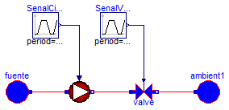

| Name | Description |
|---|---|
| Validacion_01 | Validacion basica del circulador |

Este modelo de validación representa el ensayo común para obtener la curva de una bomba.
Como actualmente el modelo del circulador está muy simplificado esta validación no resulta definitoria.
model Validacion_01 "Validacion basica del circulador"
Circulador circulador(
medium=Modelica.Thermal.FluidHeatFlow.Media.Water(),
espec=Soltermica.Bombas.Circuladores.CatalogoEquipos.GRUNDFOS_UPS_25_120(),
T_ini=293.15);
Modelica.Thermal.FluidHeatFlow.Components.Valve valve(
medium=Modelica.Thermal.FluidHeatFlow.Media.Water(),
y1=1,
Kv1=0.0002,
kv0=0.00001,
dp0=151300,
rho0=995.6);
Modelica.Thermal.FluidHeatFlow.Sources.Ambient fuente(medium=
Modelica.Thermal.FluidHeatFlow.Media.Water(), p_Ambient=101300);
Modelica.Thermal.FluidHeatFlow.Sources.Ambient ambient1(medium=
Modelica.Thermal.FluidHeatFlow.Media.Water(), p_Ambient=101300);
Modelica.Blocks.Sources.Trapezoid SenalCirculador(
rising=0.01,
width=120,
falling=0.01,
period=3600,
startTime=10);
Modelica.Blocks.Sources.Trapezoid SenalValvula(
amplitude=0.5,
rising=2,
width=10,
falling=2,
period=3600,
startTime=60);
equation
connect(valve.flowPort_b, ambient1.flowPort);
connect(circulador.flowPort_b, valve.flowPort_a);
connect(fuente.flowPort, circulador.flowPort_a);
connect(SenalCirculador.y, circulador.u);
connect(SenalValvula.y, valve.y);
end Validacion_01;